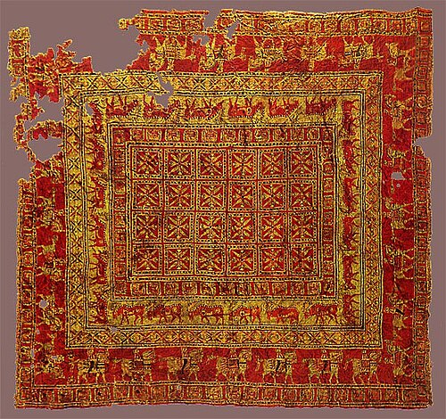
巴泽雷克地毯 · 公元前5世纪 · 已知最早的手工打结地毯
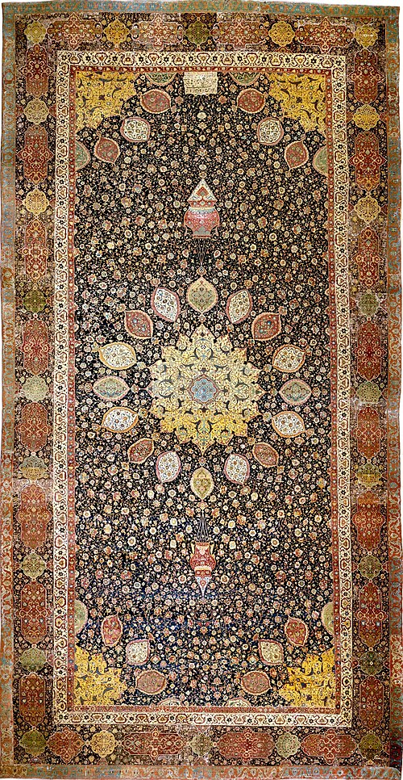
阿尔达比尔地毯 · 1539–1540 · 萨法维巅峰之作
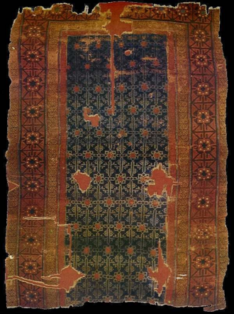
塞尔柱时期地毯残片 · 13世纪
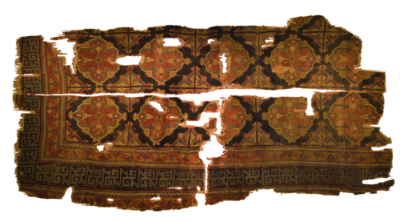
科尼亚塞尔柱地毯 · 13世纪
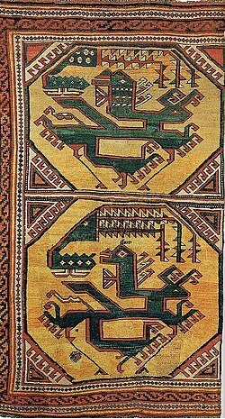
安纳托利亚凤纹地毯 · 早期奥斯曼
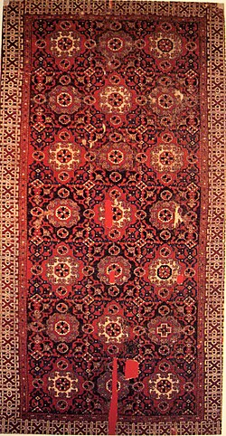
霍尔拜因地毯 · 15–16世纪 · 小纹样型
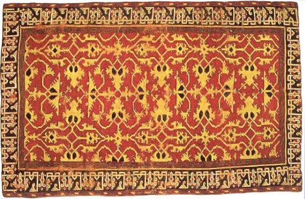
洛托地毯 · 16世纪 · 阿拉伯藤蔓型
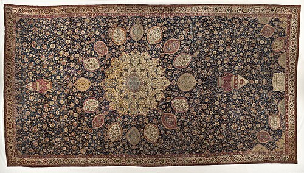
桑古什科地毯 · 16世纪 · 波兰藏
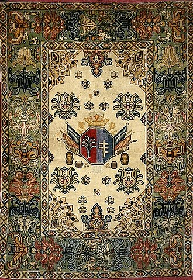
波兰纹章地毯 · 17世纪
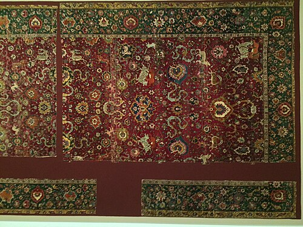
萨法维动物纹地毯 · 16世纪 · 波斯宫廷
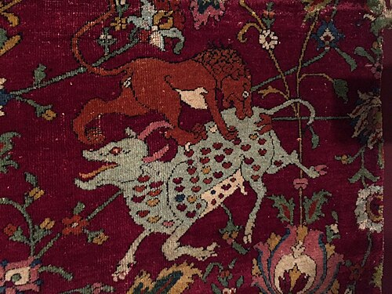
萨法维狩猎图地毯 · 16世纪 · 皇家工坊
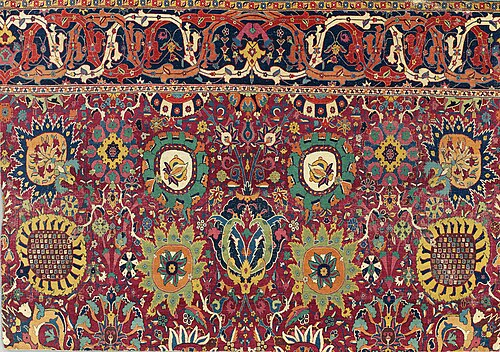
克尔曼花瓶纹地毯 · 17世纪
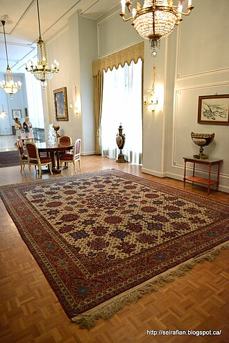
尼亚瓦兰宫地毯 · 波斯
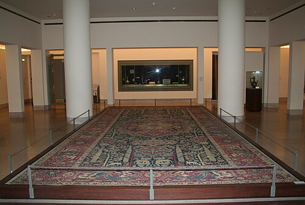
曼特斯地毯 · 卢浮宫藏 · 16世纪
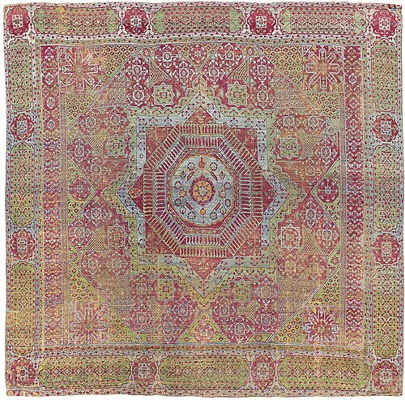
马穆鲁克地毯 · 15–16世纪 · 埃及
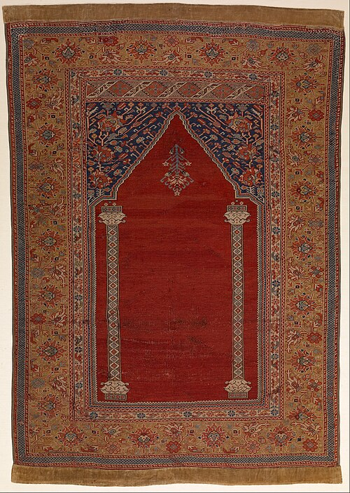
土耳其祈祷毯 · 奥斯曼
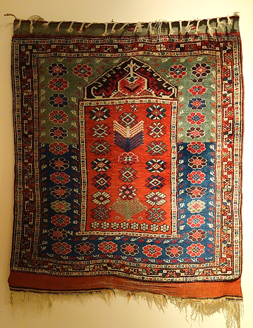
贝尔加马祈祷毯 · 安纳托利亚
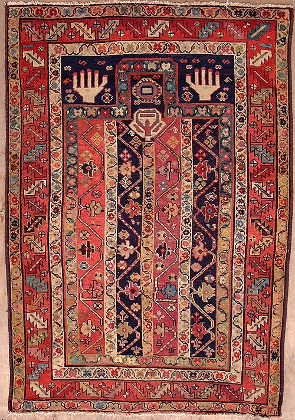
希尔凡高加索地毯 · 19世纪
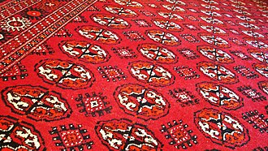
土库曼地毯 · 中亚
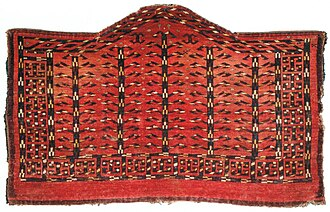
约穆特阿斯马利克 · 土库曼
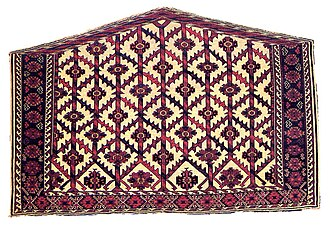
约穆特阿斯马利克 · 土库曼 · 双联
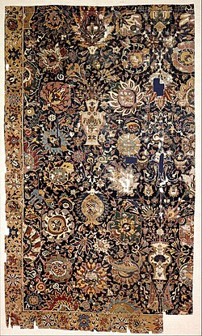
印度花瓶纹地毯 · 莫卧儿
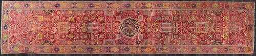
印度凯沃基安地毯 · 莫卧儿
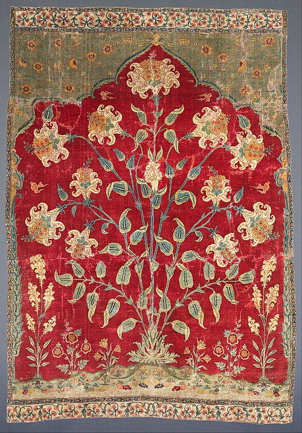
印度地毯残片 · 莫卧儿
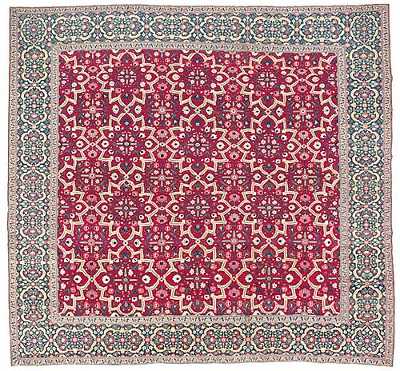
印度千花地毯 · 莫卧儿
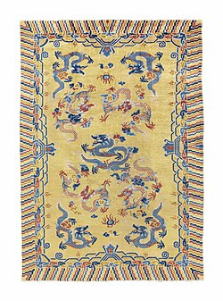
宁夏出口地毯 · 约1870年 · 黄金时代
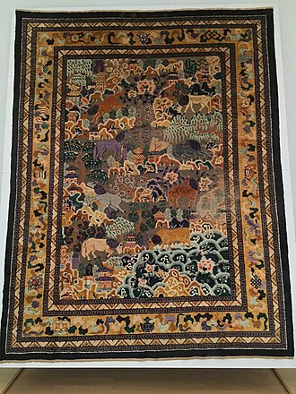
清代宫廷龙纹地毯
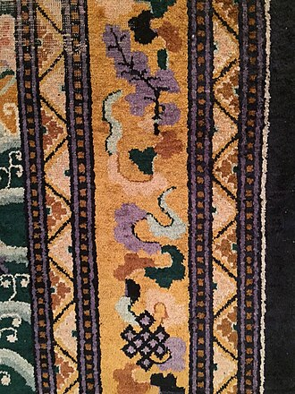
清代宫廷地毯 · 吉祥纹样
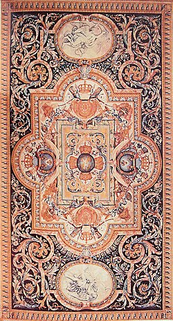
萨伏纳里地毯 · 法国 · 17世纪
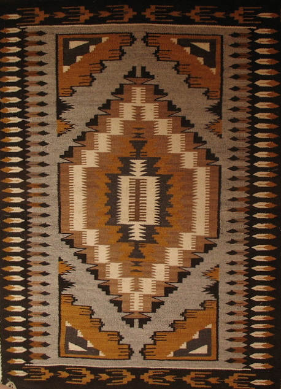
纳瓦霍地毯 · 北美
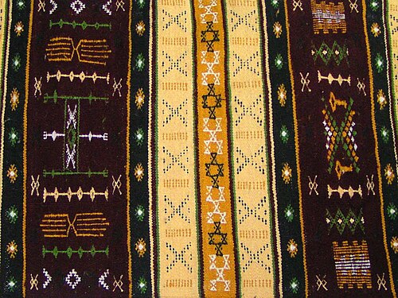
柏柏尔卡比尔地毯 · 北非
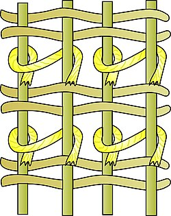
波斯结（不对称结）结构示意
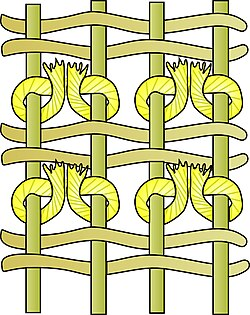
土耳其结（对称结）结构示意